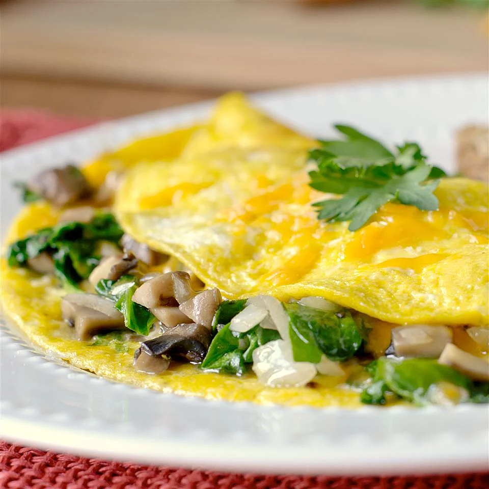

Mushroom Spinach Omelet

Description
In culinary school we learned that a chef is only as good as the omelet
they make. Well, that's intimidating. I've since learned that it really
doesn't have to be. Omelets are no scarier than good scrambled eggs. A
gentle drag then fold creates the perfect blanket for cheese and your
favorite fillings. Here are a few tips so you can be a master chef of
breakfast.
An Omelet is a dish made from beaten eggs, fried with butter or oil in a
frying pan (without stirring as in scrambled egg). It is quite common for
the omelette to be folded around fillings such as chives, vegetables,
mushrooms, meat (often ham or bacon), cheese, or some combination of the
above. Whole eggs or egg whites are often beaten with a small amount of
milk, cream, or water.
Ingredients
- 1 (8 ounce) carton liquid egg substitute
- 1 tablespoon shredded Cheddar cheese
- 1 tablespoon shredded Parmesan cheese
- 1/4 teaspoon salt
- 1/8 teaspoon ground black pepper
- 1/8 teaspoon garlic powder
- 1/8 teaspoon red pepper flakes
- 1 teaspoon olive oil
- 1/2 cup chopped fresh mushrooms
- 1 tablespoon chopped onion
- 1/2 cup chopped fresh spinach, or more to taste
Steps
-
Whisk egg substitute, Cheddar cheese, Parmesan cheese, salt, black
pepper, garlic powder, and red pepper flakes together in a bowl.
-
Heat olive oil in a nonstick skillet over medium heat; cook and stir
mushrooms and onion until tender, 4 to 5 minutes. Add spinach; cook
until spinach wilts, 3 to 4 minutes. Pour in egg mixture; swirl pan
around to evenly distribute egg mixture. Cook until egg is fully cooked
and set in the middle, 5 to 10 minutes. Cut into wedges.
Return